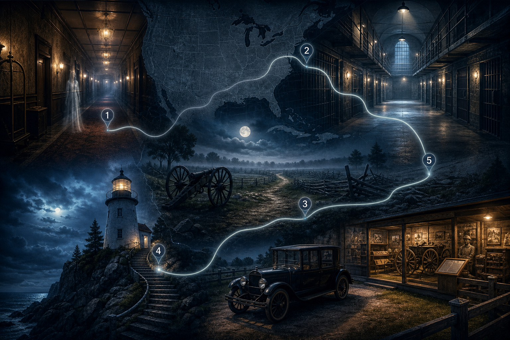
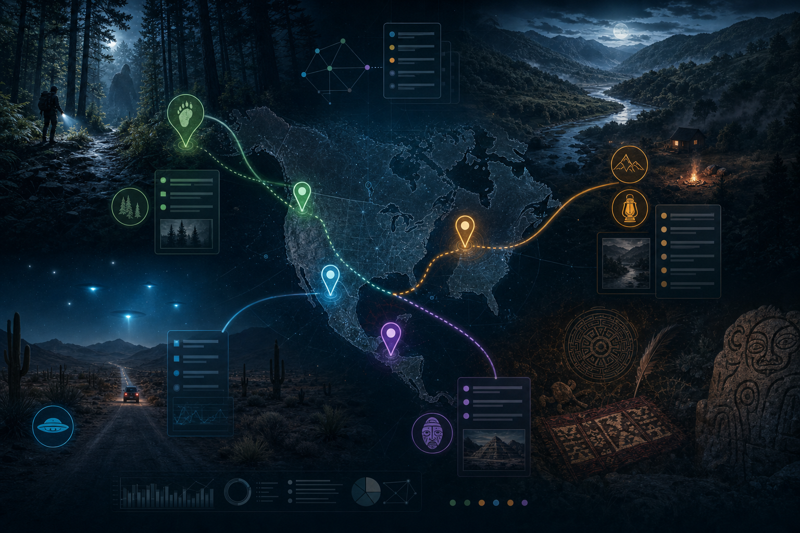
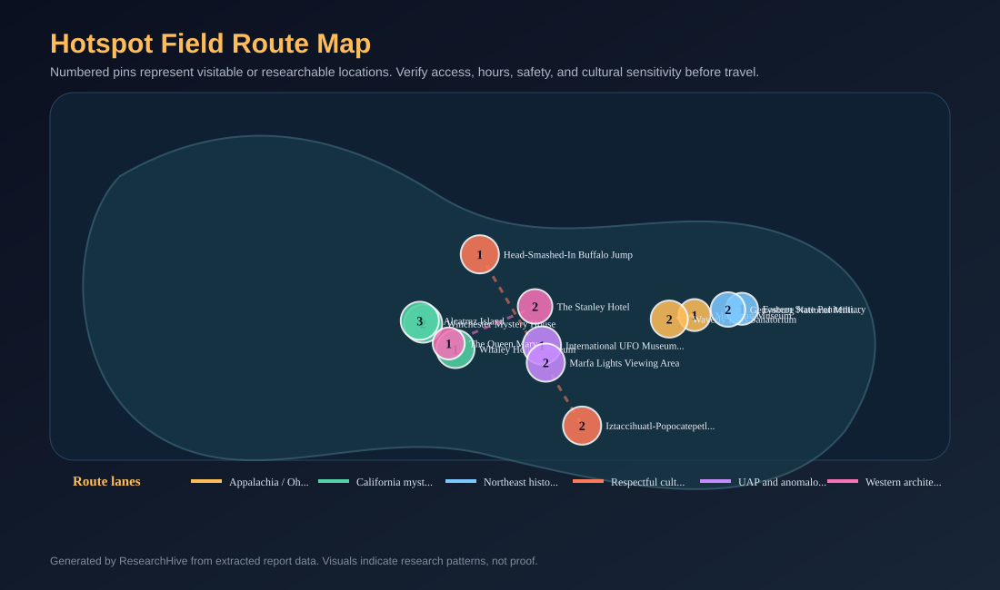
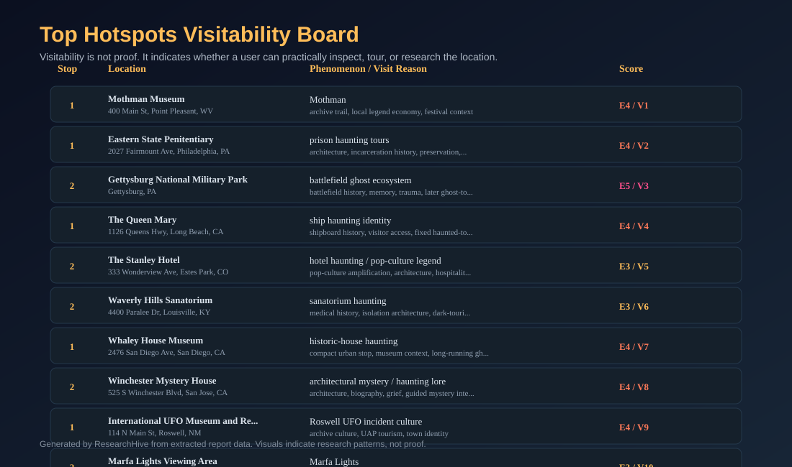
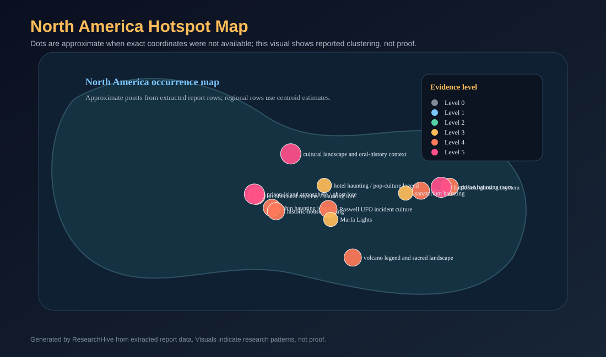
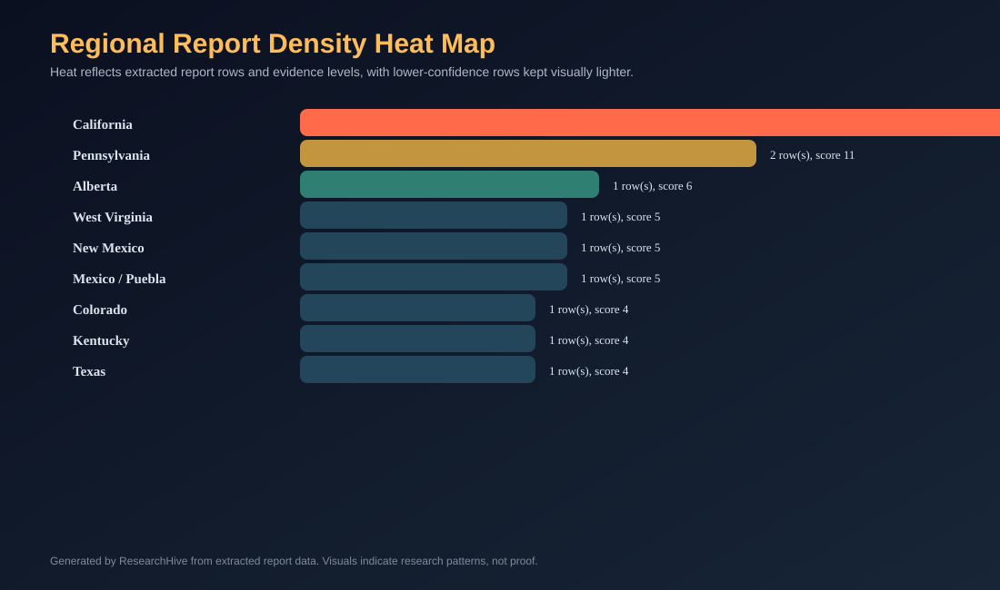

Table Of Contents
- Executive Summary
- Key Findings
- Method And Evidence Standard
- Category Framework
- Visuals And Source Media
- Clickable Field Guide Cards
- Route Strategy
- What The Report Can Say With Confidence
- What A Stronger Deep Run Should Add
- Reader Roadmap
- Risks And Cautions
- Map-Ready Location Dataset
- Source Index
- Conclusion
- Report Visuals
- Hotspot Field Route Map
- Top Hotspots Visitability Board
- North America Hotspot Map
- Regional Report Density Heat Map
- Location Source Cards
Generated: 2026-06-13 23:59 UTC | Sources: official sites, public-history institutions, parks, museums, and report-ready route data | Purpose: field-guide research packet
Executive Summary
North America has no single "unknowns" story. It has several overlapping systems of belief, tourism, memory, local identity, and unresolved witness culture. Haunted prisons, battlefield ghost tours, cryptid museums, UAP towns, and sacred or legendary landscapes do not all mean the same thing. A serious report should separate those categories instead of blending them into one paranormal soup.
The strongest finding is practical: the most useful field-guide route is not built around proving ghosts, cryptids, or UAPs. It is built around places where the reader can inspect the setting, compare claims against public history, and understand why the story persists. That favors museums, official historic sites, national parks, public visitor centers, and long-running tour sites over private rumor locations or culturally sensitive traditions.
This report identifies twelve visitable or researchable stops across the United States, Canada, and Mexico. The route emphasizes places with public access, official pages, stable location metadata, and enough surrounding context to make the stop useful even if the extraordinary claim remains unproven. The report also distinguishes "evidence of a place and tradition" from "proof of the phenomenon." A museum, park, or official tour can verify that a location and public tradition exist; it cannot by itself verify a haunting, cryptid, or metaphysical entity.
The best near-term product shape is a field guide plus evidence map: a readable report, clickable cards that take readers to official sources, a route dataset, and source-media leads. Generated artwork can be used as atmosphere, but map and route visuals should be deterministic and data-driven. This version uses custom editorial artwork only as supporting visual design; the route and hotspot visuals come from a structured location table.
Key Findings
- The most reliable anchors are official or institutional sites: National Park Service pages, museum pages, official historic-site tour pages, and public visitor resources.
- Haunted-site value usually comes from public history, architecture, tragedy, preservation, and tourism framing, not from the claim being scientifically proven.
- Cryptid and UAP stops work best when treated as culture, archives, witness tradition, and local economy rather than as proof.
- The strongest route stops are Mothman Museum, Eastern State Penitentiary, Gettysburg, the Queen Mary, the Stanley Hotel, Waverly Hills, the Whaley House, Winchester Mystery House, Roswell, Marfa, Alcatraz, and a small set of culturally sensitive landscape stops.
- Canada and Mexico should not be padded with weak "monster list" entries. Better coverage comes from official cultural landscapes, parks, museums, and places where stories connect to living communities or public interpretation.
- A reader-friendly packet needs exact stops, official links, access notes, source cautions, and a clear evidence standard. Otherwise it becomes an entertaining list, not a research product.
- The report should avoid claiming that sacred Indigenous traditions, death sites, or trauma landscapes are tourist entertainment. Sensitive locations need careful wording and "learn first, do not intrude" guidance.
Method And Evidence Standard
This report uses a field-guide standard, not a courtroom or laboratory standard. A location is included when it has at least one stable public source trail and a clear reason a reader might visit, research, or compare claims. The key question is not "is the phenomenon proven?" The key question is "what can a reader inspect, verify, and understand from this stop?"
The evidence tiers used here are:
| Tier | Meaning | Example |
|---|---|---|
| E5 | Official public-history or government source verifies the place, access, and interpretation context | NPS pages for Gettysburg or Alcatraz |
| E4 | Official site or museum verifies location, public access, and a durable local tradition | Mothman Museum, Queen Mary, Whaley House |
| E3 | Long-running public site or tour operation verifies the place and visitor infrastructure, but the extraordinary claim remains unverified | Waverly Hills, Stanley Hotel |
| E2 | Region or story is culturally important but hard to translate into a simple tourist stop without distortion | broad folklore corridors |
| E1 | Low-confidence rumor, private property, or thinly sourced internet claim | not used as a primary stop |
For this report, E4 does not mean "the creature exists" or "the ghost is real." It means the stop has a usable public source trail and enough context to make the story researchable.
Category Framework
The unknowns in this packet fall into five useful categories.
Public-history hauntings are places where tragedy, architecture, confinement, war, or death created a setting for ghost narratives. Eastern State Penitentiary, Gettysburg, Alcatraz, Waverly Hills, and the Queen Mary fit here. The strongest way to handle these is to lead with documented history and then explain how the haunting frame attaches to that history.
Modern legend and cryptid economy includes places where a story becomes local identity, archive, festival, and tourist economy. Point Pleasant and Roswell are the best examples in this packet. The story matters whether or not the being or object is proven, because the story reshapes local memory and public behavior.
Roadside UAP and light phenomena includes locations like Marfa where the field value is observation, landscape, and documented visitor culture. The right standard is careful description, not overclaiming.
Cultural and sacred landscapes include places where stories are tied to communities, ceremonies, or long-lived oral tradition. These require stricter sensitivity rules. Do not turn living traditions into "monster hunting." Use official cultural pages and visitor guidance first.
Atmospheric architecture and mystery tourism includes places such as the Winchester Mystery House. The value is the house, the guided interpretation, and the cultural meaning of the story.
Visuals And Source Media
The images below are editorial artwork and should be treated as atmosphere. The route visuals later in the report are generated from the structured location dataset, while the clickable cards point to official or public-history source trails.

Editorial Route Artwork Atmospheric cover art for the field-guide concept. Use as design support, not evidence.
Unknowns Route Theme Artwork Concept artwork for the broader route. The data visuals and official source cards carry the factual trail.Clickable Field Guide Cards
Route Strategy
The best field route is modular. A reader should not be told to drive across the continent as one linear trip. The better product is a set of clusters that can be used as short itineraries.
Appalachia and Ohio Valley starter route. Start with Point Pleasant because it gives the reader the clearest modern-legend anchor: a town, a museum, a statue, and a documented local story economy. Pair it with nearby public-history and wildlife-context stops rather than treating every regional rumor as equal.
Northeast history and haunting route. Eastern State and Gettysburg form a strong research pair because both show how documented institutions and mass trauma become haunted settings. The productive question is not "which ghost is real?" It is "what social work does the ghost story perform here?"
Western architecture, ship, and UAP route. The Queen Mary, Stanley Hotel, Winchester Mystery House, Alcatraz, Roswell, and Marfa are very different stops, but each has a stable visitor trail and a mature public identity. This cluster is best for comparing how tourism, architecture, media, and witness culture keep unknowns alive.
Culturally sensitive landscapes. Canada and Mexico need a different standard. Some stories are not entertainment products, and some sacred landscapes should be approached through official cultural institutions, parks, or public interpretation rather than private folklore scraping. The route should use respectful visitor guidance and avoid converting living traditions into "huntable" attractions.
What The Report Can Say With Confidence
It can say that these places exist, have official or semi-official visitor trails, and have durable public traditions attached to them. It can say that several sites have become part of local economies and identity. It can say that the same patterns repeat: unusual death, isolation, difficult landscapes, institutional control, military history, abandoned architecture, or a famous witness story often gives the public a frame for explaining ambiguous experiences.
It should not say that a ghost, cryptid, UAP, or metaphysical being is proven. In fact, the value of this packet is that it does not need that claim. The commercial and research value is in showing the reader where to go, what to compare, what official context to read first, and how to avoid being misled by shallow viral lists.
What A Stronger Deep Run Should Add
A deeper version should add archival newspaper references, local library links, museum collection records, oral-history leads, local tour operators, safety/access notes, seasonal closures, and recent visitor guidance. It should also split "legend claim" from "site documentation" in the citation ledger.
For UAP-related material, it should avoid treating one government office as the entire truth source. A serious research workflow would compare official statements, inspector general material where available, whistleblower testimony, congressional hearing records, aviation-safety context, sensor limitations, and skeptical analysis. The report should show the conflict instead of resolving it prematurely.
For folklore and sacred traditions, the system should prioritize sources from communities, cultural centers, official parks, university archives, and museums. It should not scrape sensational pages and present them as equal to primary or community-led sources.
Reader Roadmap
If the user wants a practical trip, choose one cluster:
- Weekend starter: Point Pleasant plus nearby public-history stops. Focus on museum archive, town identity, and the way one modern legend becomes durable.
- Northeast public-history route: Eastern State, Gettysburg, then a museum/library day. Focus on trauma, preservation, and ghost-tour economics.
- California mystery route: Queen Mary, Whaley House, Winchester Mystery House, and Alcatraz. Focus on architecture, tourism, and how guided interpretation shapes belief.
- UAP and anomalous lights route: Roswell and Marfa. Focus on archives, observation, media history, and witness culture.
- Respectful cultural route: Use official cultural centers and parks first. Do not treat sacred stories as scavenger-hunt items.
Risks And Cautions
The biggest research risk is category collapse. If the report treats Indigenous tradition, ghost tours, cryptid museums, and UAP testimony as identical "weird stuff," the output becomes unserious. The second risk is evidence inflation: a clickable official page proves the site and visitor context, not the extraordinary claim. The third risk is tourism harm: private property, sacred sites, cemeteries, hospitals, and trauma landscapes require restraint.
The safest framing is: "Here is where the story attaches to a real place; here is what the official source verifies; here is what remains claim, interpretation, folklore, or unresolved testimony."
Map-Ready Location Dataset
| Rank | Country | Region | Exact location | Address/Area | Phenomenon | Category | Evidence Level | Visit Priority | Visit Type | Best For | Access Notes | Route Cluster | Route Stop | Official URL | Latitude | Longitude | Source Quality | Notes/Sensitivities |
|---|---|---|---|---|---|---|---|---|---|---|---|---|---|---|---|---|---|---|
| 1 | United States | West Virginia | Mothman Museum | 400 Main St, Point Pleasant, WV | Mothman | Cryptid / modern legend | 4 | 1 | public museum | archive trail, local legend economy, festival context | verify current hours and events | Appalachia / Ohio Valley | 1 | https://www.mothmanmuseum.com/ | 38.8445 | -82.1371 | official museum page | Treat as modern legend and local archive, not proof. |
| 2 | United States | Pennsylvania | Eastern State Penitentiary | 2027 Fairmount Ave, Philadelphia, PA | prison haunting tours | Public-history haunting | 4 | 2 | official historic-site tour | architecture, incarceration history, preservation, haunted-tour framing | use official tickets and daytime history context first | Northeast history route | 1 | https://www.easternstate.org/ | 39.9683 | -75.1727 | official historic-site page | Do not let ghost framing erase prison history. |
| 3 | United States | Pennsylvania | Gettysburg National Military Park | Gettysburg, PA | battlefield ghost ecosystem | Public-history haunting | 5 | 3 | national park | battlefield history, memory, trauma, later ghost-tour economy | use NPS interpretation before commercial ghost tours | Northeast history route | 2 | https://www.nps.gov/gett/index.htm | 39.8309 | -77.2311 | official NPS page | Respect memorial landscape and visitor rules. |
| 4 | United States | California | The Queen Mary | 1126 Queens Hwy, Long Beach, CA | ship haunting identity | Public-history haunting | 4 | 4 | historic ship / official tours | shipboard history, visitor access, fixed haunted-tour setting | verify tour availability and access | Western architecture route | 1 | https://www.queenmary.com/experiences.htm | 33.7528 | -118.1900 | official venue page | Use as tourism/history context, not proof. |
| 5 | United States | Colorado | The Stanley Hotel | 333 Wonderview Ave, Estes Park, CO | hotel haunting / pop-culture legend | Mystery tourism | 3 | 5 | hotel / tours | pop-culture amplification, architecture, hospitality setting | verify tour/lodging access | Western architecture route | 2 | https://www.stanleyhotel.com/ | 40.3836 | -105.5186 | official hotel page | Separate literary association from evidence claim. |
| 6 | United States | Kentucky | Waverly Hills Sanatorium | 4400 Paralee Dr, Louisville, KY | sanatorium haunting | Public-history haunting | 3 | 6 | official tours | medical history, isolation architecture, dark-tourism infrastructure | use official tours only | Appalachia / Ohio Valley | 2 | https://www.therealwaverlyhills.com/ | 38.1302 | -85.8412 | official tour page | Treat death and illness context respectfully. |
| 7 | United States | California | Whaley House Museum | 2476 San Diego Ave, San Diego, CA | historic-house haunting | Historic house haunting | 4 | 7 | museum / tours | compact urban stop, museum context, long-running ghost reputation | verify hours and official tours | California mystery route | 1 | https://whaleyhouse.org/ | 32.7523 | -117.1946 | official museum page | Museum context matters more than viral ghost lists. |
| 8 | United States | California | Winchester Mystery House | 525 S Winchester Blvd, San Jose, CA | architectural mystery / haunting lore | Mystery tourism | 4 | 8 | official mansion tour | architecture, biography, grief, guided mystery interpretation | use official tour options | California mystery route | 2 | https://winchestermysteryhouse.com/ | 37.3184 | -121.9500 | official venue page | Good for myth-making analysis. |
| 9 | United States | New Mexico | International UFO Museum and Research Center | 114 N Main St, Roswell, NM | Roswell UFO incident culture | UAP / modern legend | 4 | 9 | public museum | archive culture, UAP tourism, town identity | verify exhibit hours | UAP and anomalous lights route | 1 | https://www.roswellufomuseum.com/ | 33.3943 | -104.5227 | official museum page | Treat as UAP culture and records trail, not proof. |
| 10 | United States | Texas | Marfa Lights Viewing Area | US-90 east of Marfa, TX | Marfa Lights | Anomalous lights | 3 | 10 | public viewing area | observation culture, landscape, recurring light reports | use official visitor guidance and safe viewing | UAP and anomalous lights route | 2 | https://visitmarfa.com/see-do/marfa-lights/ | 30.3095 | -103.9440 | official visitor page | Good for observation without trespass. |
| 11 | United States | California | Alcatraz Island | San Francisco Bay, CA | prison-island atmosphere / ghost lore | Public-history haunting | 5 | 11 | national park | prison history, island isolation, public-history interpretation | NPS ferry/ticket rules apply | California mystery route | 3 | https://www.nps.gov/alca/index.htm | 37.8267 | -122.4230 | official NPS page | Lead with documented prison history. |
| 12 | Canada | Alberta | Head-Smashed-In Buffalo Jump | Fort Macleod area, Alberta | cultural landscape and oral-history context | Cultural landscape | 5 | 12 | official interpretive centre | respectful context, place memory, Indigenous public interpretation | use official interpretive guidance | Respectful cultural route | 1 | https://headsmashedin.ca/ | 49.7336 | -113.6253 | official interpretive centre page | Not a paranormal attraction; include for respectful cultural framework. |
| 13 | Mexico | Mexico / Puebla | Iztaccihuatl-Popocatepetl National Park | Central Mexico volcanic corridor | volcano legend and sacred landscape | Cultural landscape / legend | 4 | 13 | national park / landscape | landscape, mythology, volcano context, regional story | verify official access, safety, and closures | Respectful cultural route | 2 | https://www.gob.mx/semarnat/articulos/parque-nacional-iztaccihuatl-popocatepetl | 19.0236 | -98.6270 | official government page | Treat as cultural and landscape context, not monster tourism. |
Source Index
- Mothman Museum official site: https://www.mothmanmuseum.com/
- Eastern State Penitentiary official site: https://www.easternstate.org/
- Gettysburg National Military Park, National Park Service: https://www.nps.gov/gett/index.htm
- Queen Mary official experiences page: https://www.queenmary.com/experiences.htm
- Stanley Hotel official site: https://www.stanleyhotel.com/
- Waverly Hills Sanatorium official site: https://www.therealwaverlyhills.com/
- Whaley House official site: https://whaleyhouse.org/
- Winchester Mystery House official site: https://winchestermysteryhouse.com/
- International UFO Museum and Research Center official site: https://www.roswellufomuseum.com/
- Visit Marfa, Marfa Lights page: https://visitmarfa.com/see-do/marfa-lights/
- Alcatraz Island, National Park Service: https://www.nps.gov/alca/index.htm
- Head-Smashed-In Buffalo Jump official site: https://headsmashedin.ca/
- Iztaccihuatl-Popocatepetl National Park, Government of Mexico: https://www.gob.mx/semarnat/articulos/parque-nacional-iztaccihuatl-popocatepetl
Conclusion
The field-guide version is stronger than a plain list because it gives readers a way to act: choose a cluster, follow official links, understand the historical setting, and compare the claim against the source trail. The report should stay intellectually honest. It can make the unknowns fascinating without pretending that atmosphere is evidence or that a clickable official page proves the extraordinary claim.
The most useful product direction is therefore a combined packet: full report, exact location cards, source-media cards, deterministic route visuals, and a source index. That is what this version is built to show.
Report Visuals
These visuals are rendered from the report's extracted location and evidence dataset. Approximate or regional points are labeled so they are not confused with exact addresses.
Hotspot Field Route Map

Numbered pins represent visitable or researchable locations. Verify access, hours, safety, and cultural sensitivity before travel.
Source data: visual-dataset.csv
Top Hotspots Visitability Board

Visitability is not proof. It indicates whether a user can practically inspect, tour, or research the location.
Source data: visual-dataset.csv
North America Hotspot Map

Dots are approximate when exact coordinates were not available; this visual shows reported clustering, not proof.
Source data: visual-dataset.csv
Regional Report Density Heat Map

Heat reflects extracted report rows and evidence levels, with lower-confidence rows kept visually lighter.
Source data: visual-dataset.csv